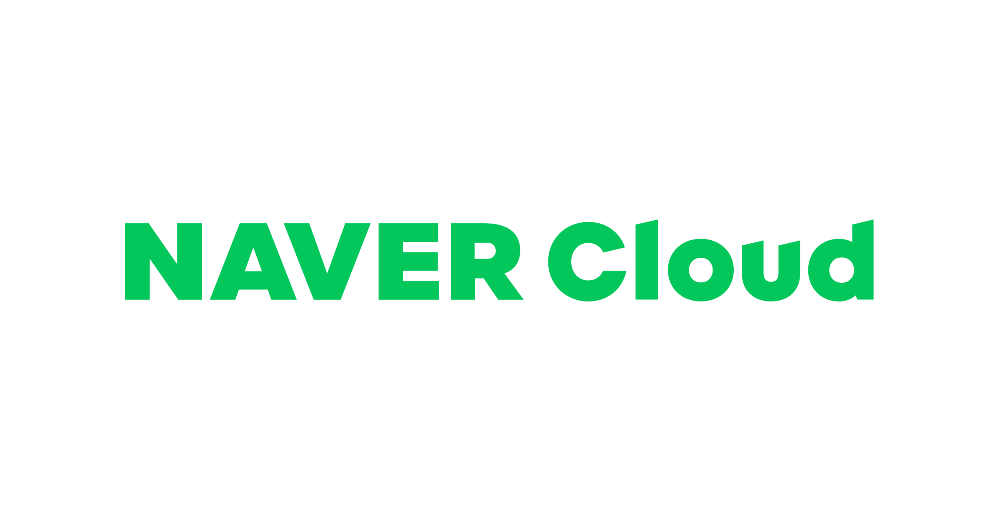
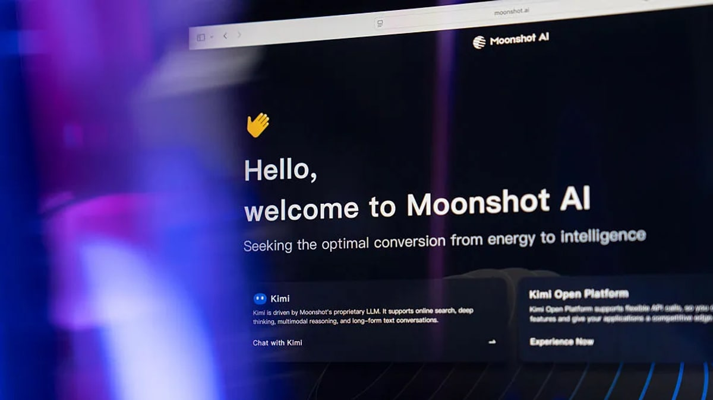

中国创作者视角 • 全球AI前沿 • 每日晨报
Janet's Express Box
2026-06-09 // VOL_252
2026-06-09 // VOL_252
AI 基建开始收口
模型、算力、治理和 agent 正在被打包成企业操作系统。
今天这期不再是模型参数秀，而是 AI 开始被塞进算力、电力、内存、浏览器、办公系统和政府预算。大厂在抢控制层，小厂在抢垂直岗位，创作者要看的不是谁会聊天，而是谁能真的替你跑流程。
📌 今日趋势：AI 基建开始收口
今天的共同主线很清楚：OpenAI 在公司治理上继续铺路，Apple 把本地 foundation model 开给开发者，NVIDIA 在韩国把内存、云、机器人和主权 AI 串成产业链。AI 新闻不再只是模型谁更聪明，而是控制权、算力入口和业务流程谁来管。
这对中国创作者和企业的含义很现实：下一轮红利不在多会写 prompt，而在能不能把模型嵌进具体岗位、具体数据和具体审批里。内容团队要盯浏览器和办公入口，软件团队要盯 agent 权限和日志，老板要盯每个 AI 工具是不是真的省人，还是只多收一层订阅费。
接下来 2-4 周盯三件事：一是 OpenAI 的资本化动作会不会加速产品商业化，二是 Apple 本地模型会不会让端侧应用重新起量，三是 NVIDIA 这类 AI factory 打包方案会不会成为云厂、政府和制造业的新预算语言。
01 / KEY INTELLIGENCE (全球要闻)
OpenAI
OpenAI 把公司治理继续铺路
来源: OpenAI · 2026-06-09 · 原文链接
OpenAI 发布新的公司治理说明，强调公益目标、长期使命和现有结构下的改造方向。这个动作表面是解释组织设计，实质是在给更大规模融资、产品商业化和监管沟通铺轨道。
Janet 锐评：
这条新闻撕开的是 AI 巨头从实验室公司变成基础设施公司的缺口。门槛不只是模型能力，而是资本、监管、商业收入和公众信任要同时过关。国内创作者别只盯发布会，真正要盯的是 OpenAI 会不会把 Codex、ChatGPT、浏览器和企业后台做成统一收费入口。
Apple Machine Learning Research
Apple 把 AFM 3 摆上台面
来源: Apple Machine Learning Research · 2026-06-09 · 原文链接
Apple Machine Learning Research 发布第三代 Apple Foundation Models，列出端侧 AFM 3 Core、20B 稀疏端侧模型、Private Cloud Compute 云端模型和图像模型。重点不是苹果终于承认用 AI，而是它把本地、私有云和 Google/NVIDIA 合作放进同一套架构里。
Janet 锐评：
这条新闻撕开的是端侧 AI 和私有云之间的入口缺口。门槛在芯片、系统版本、模型调度和隐私承诺能不能兑现，而不是发布会上讲得多漂亮。中国独立开发者和工具团队要立刻想清楚：哪些输入法、笔记、剪辑、客服和办公插件可以靠本地模型减少云端成本。真正的机会在默认系统能力，而不是又做一个云端聊天框。
UK Government
英国把 AI 硬件写进预算
来源: UK Government · 2026-06-09 · 原文链接
英国政府公布 AI Hardware Plan，把算力、半导体、数据中心和研发支持放进国家级议程。它不是单纯喊口号，而是承认 AI 竞争已经从模型层打到电力、芯片和机房层。
Janet 锐评：
这条新闻撕开的是主权 AI 的底层缺口。门槛在电网、芯片供应、土地审批和长期资金，绝不是买几台 GPU 就能解决。国内企业要看懂这个信号：未来 AI 成本会越来越像制造业，谁有稳定算力和行业数据，谁才有资格谈长期产品。算力会从采购项变成战略项，谁提前锁资源谁更有议价权。
NVIDIA / SK hynix
NVIDIA 把 SK hynix 绑进内存战
来源: NVIDIA / SK hynix · 2026-06-09 · 原文链接
NVIDIA 与 SK hynix 宣布多年技术合作，围绕 AI factories 需要的先进内存技术推进联合优化。HBM、内存带宽和系统设计正在变成 AI 训练与推理扩张的硬瓶颈。
Janet 锐评：
这条新闻撕开的是模型背后最不性感但最要命的内存缺口。门槛不在 PPT 上的模型多大，而在带宽、封装、供货周期和整机系统能不能稳定跑。国内做推理服务、私有化部署和数据中心方案的团队，别只报价 GPU，内存和系统吞吐才是老板最后会骂人的地方。真正决定毛利的，往往是这些看不见的系统瓶颈。
PYMNTS / Financial Times
OpenAI 被传瞄准超级应用
来源: PYMNTS / Financial Times · 2026-06-09 · 原文链接
Financial Times 报道称，OpenAI 正在把 ChatGPT 往更完整的工作入口推进，围绕工具、服务和更深的用户关系扩展。即使细节仍要等官方落地，方向已经很明显：聊天框想吞掉更多日常软件入口。
Janet 锐评：
这条新闻撕开的是 AI 产品分发的入口缺口。门槛在用户习惯、支付关系、企业权限和第三方生态，不是多接几个插件就能变超级应用。内容创作者和小团队要警惕：如果 ChatGPT 变成默认工作台，你的工具要么成为它的能力，要么就被它压成一个小按钮。
02 / MODEL UPDATES (模型动态)
Apple Developer
Apple 让 App 跑本地模型
来源: Apple Developer · 2026-06-09 · 原文链接
Apple 的 Foundation Models framework 让开发者在应用内调用 Apple Intelligence 背后的设备端模型能力，强调隐私保护、离线能力和系统级体验。它给模型动态带来的重点，是端侧模型第一次被更系统地交给 App 层使用。
Janet 锐评：
这条新闻撕开的是小模型落地的分发缺口。门槛在模型能力受限、系统版本覆盖和开发者设计能力，而不是能不能调一个云模型。做效率工具、知识管理和创作辅助的团队要尽快做端侧版本，因为本地响应和隐私会成为付费理由。下一波好产品会把模型藏进动作里，不再把聊天框放在台前。
Alibaba Cloud
Qwen 把企业模型矩阵继续扩开
来源: Alibaba Cloud · 2026-06-09 · 原文链接
Alibaba Cloud 在 6 月 8 日的模型动态中继续强化 Qwen 系列面向企业应用的更新节奏，围绕推理、代码、长上下文和多模态组合能力扩展。国内模型竞争正在从单点参数榜，转向可部署、可组合、可收费的产品矩阵。
Janet 锐评：
这条新闻撕开的是国产模型商业化的组合缺口。门槛在稳定服务、行业适配和客户迁移成本，而不是榜单上多赢一次。中国企业选模型别再问谁最强，应该问你的客服、代码、检索和文档场景能不能被同一套模型矩阵稳定接住。模型厂最后拼的是交付组合，不是单张评测截图。
NVIDIA / CXO Insight
Nemotron 3 Ultra 押注长任务
来源: NVIDIA / CXO Insight · 2026-06-09 · 原文链接
NVIDIA Nemotron 3 Ultra 在 6 月 8 日继续被企业软件和 agent 场景推到台前，主打长任务、代码、研究和企业流程。它的卖点不是聊天更会说，而是让 agent 在更长上下文里少断线、少花钱。
Janet 锐评：
这条新闻撕开的是开源模型服务长流程任务的能力缺口。门槛在推理吞吐、上下文管理、工具调用稳定性和部署成本，企业不会为一句漂亮回答买单。代码工具团队、研究助手和企业 agent 平台可以盯它，但要先测长任务失败率，不要只看一次性榜单。长流程跑得稳，才是 agent 真正进企业的门槛。
NVIDIA / SK Telecom
NVIDIA 把模型跑进韩国云
来源: NVIDIA / SK Telecom · 2026-06-09 · 原文链接
NVIDIA 与韩国伙伴推进面向 AI 的云和工厂基础设施，目标是让本地企业在主权云环境中获得更接近产业现场的 AI 能力。模型竞争正在从谁发布模型，转成模型在哪个国家、哪朵云、哪套产业系统里运行。
Janet 锐评：
这条新闻撕开的是模型落地环境的缺口。门槛在数据驻留、云厂绑定、算力价格和行业系统集成，不是简单把模型下载回来。国内做企业 AI 的团队要学会卖部署场景：金融、制造、政务和医疗客户要的是可控运行环境，不是热闹演示。能把模型放进客户现场，才有长期合同的入口。
03 / TECH INSIGHTS (技术深度)
SK Telecom / NVIDIA
SK Telecom 把 AI 云做成国策
来源: SK Telecom / NVIDIA · 2026-06-09 · 原文链接
SK Telecom 与 NVIDIA 推进韩国 AI 基础设施合作，围绕主权 AI、云服务和产业应用建设更大规模的本地能力。电信运营商正在从卖连接，转向卖 AI 算力和行业平台。
Janet 锐评：
这条新闻撕开的是运营商重新入场的缺口。门槛在机房、电力、网络、行业客户和长期投入，轻资产 AI 公司很难复制。中国运营商、园区和地方云厂应该看懂：AI 预算不会只给模型公司，谁掌握本地客户和基础设施，谁就能吃到企业改造的钱。未来卖的是运行能力，不只是网络套餐。

NAVER Cloud / NVIDIA
NAVER 把主权 AI 云端化
来源: NAVER Cloud / NVIDIA · 2026-06-09 · 原文链接
NAVER Cloud 与 NVIDIA 的合作强调面向韩国企业和公共部门的 AI 云能力，试图把数据、算力和模型服务留在本地体系内。主权 AI 不再只是政治口号，而是云厂争夺大型客户的新包装。
Janet 锐评：
这条新闻撕开的是数据主权和商业云之间的缺口。门槛在本地合规、稳定交付和与客户现有系统的深度绑定，不是换个宣传词。国内云厂和 SaaS 团队要学会把 AI 能力包装成可审计、可控、可部署的行业方案，否则只会被大云厂当生态配件。客户买的是责任边界，不只是模型接口。
Doosan / NVIDIA
Doosan 把机器人接进 AI 工厂
来源: Doosan / NVIDIA · 2026-06-09 · 原文链接
Doosan 与 NVIDIA 在机器人、AI-RAN 和工业 AI 方向推进合作，把机器人训练、工厂仿真和边缘智能放到同一套产业叙事里。Physical AI 的热词背后，真正要解决的是机器如何在真实现场稳定干活。
Janet 锐评：
这条新闻撕开的是机器人从演示走向生产线的缺口。门槛在传感器、仿真数据、现场安全、维护成本和故障责任，远比视频里挥两下机械臂难。国内工业机器人团队要少拍概念片，多把质检、搬运、巡检和培训流程做成能复用的标准包。能被工厂验收，才算真正的 physical AI。
NERC
NERC 开始盯数据中心负载
来源: NERC · 2026-06-09 · 原文链接
北美电力可靠性机构 NERC 发布与大型数据中心负载相关的可靠性指导，提醒电网运营者处理 AI 数据中心带来的用电波动和规划压力。AI 的扩张已经开始触碰电力系统的硬约束。
Janet 锐评：
这条新闻撕开的是 AI 基建的电力缺口。门槛在电网接入、长期合同、峰值负载和区域审批，不是云厂自己喊扩容就能解决。中国企业做私有算力或智算中心时，别只算 GPU 报价，电、冷却、运维和利用率才决定项目是不是吞钱机器。电力表会成为 AI 公司最诚实的财务报表。
04 / INVESTMENT & PREDICTION (投资视角/大胆预测)
今日核心预测
AMD
AMD 在英国押下二十亿英镑
来源: AMD · 2026-06-09 · 原文链接
AMD 宣布计划在英国投入 20 亿英镑，围绕 AI、研发和高性能计算扩展本地布局。这类投资不是形象工程，而是芯片公司在 AI 基建国家竞赛里抢位置。
Janet 锐评：
这条新闻撕开的是非 NVIDIA 阵营争夺 AI 基建预算的缺口。门槛在生态、软件栈、客户信任和供货能力，单靠芯片价格便宜不够。国内老板看这类新闻要清醒：多供应商路线可以压成本，但迁移训练和运维能力必须提前准备。便宜硬件只有接上软件生态，才会变成真正选择。

Bloomberg
Moonshot 估值传冲三百亿美元
来源: Bloomberg · 2026-06-09 · 原文链接
市场消息称，Moonshot AI 正在寻求新融资，目标估值可能达到约 300 亿美元。国内大模型公司进入新阶段：不是谁会讲故事，而是谁能证明用户、收入和算力账跑得通。
Janet 锐评：
这条新闻撕开的是国产大模型资本耐心的缺口。门槛在流量转化、推理成本、企业付费和监管边界，烧钱买月活迟早要交账。创作者可以继续用 Kimi 这类工具提效，但投资视角要看商业闭环，不要被估值数字带着跑。下一轮融资会奖励收入质量，而不是只奖励声量。
PhysicsX
PhysicsX 融资押注工程 AI
来源: PhysicsX · 2026-06-09 · 原文链接
工程 AI 公司 PhysicsX 被报道完成大额融资，方向集中在用 AI 加速物理仿真、工程设计和工业研发。投资人正在从通用聊天应用转向能直接压缩研发周期的垂直 AI。
Janet 锐评：
这条新闻撕开的是工业研发软件的岗位缺口。门槛在专业数据、仿真可信度、工程师工作流和客户验证周期，比做一个通用助手难得多。国内制造业、汽车和硬件团队要盯这类工具，因为真正省钱的是少做几轮试验，不是让 AI 写几段漂亮文案。垂直 AI 的价值，会在研发周期里结账。
05 / CREATOR TOOLBOX (创作者工具箱)
Janet的快车箱 · AI科技晨报 · 2026-06-09 版